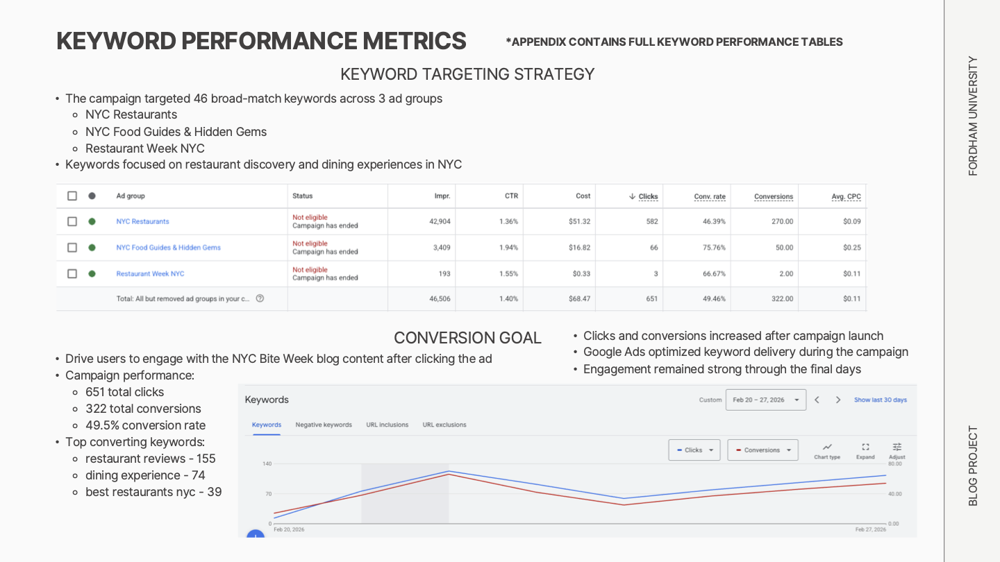
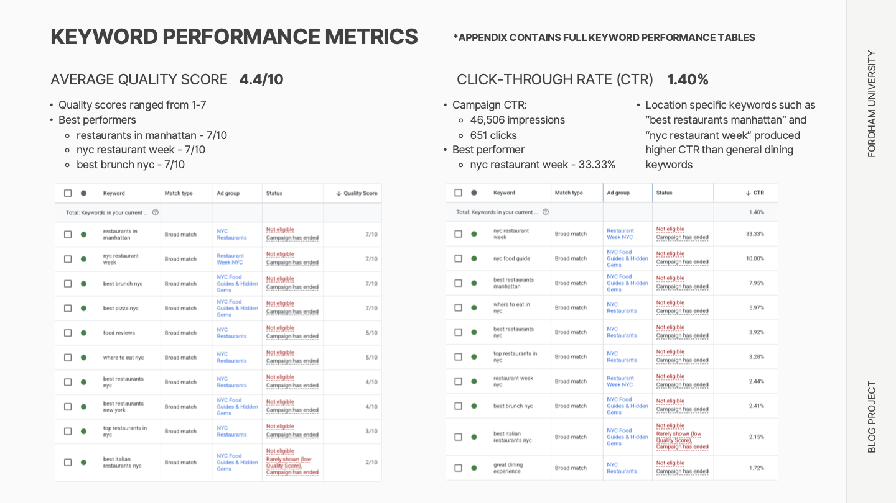
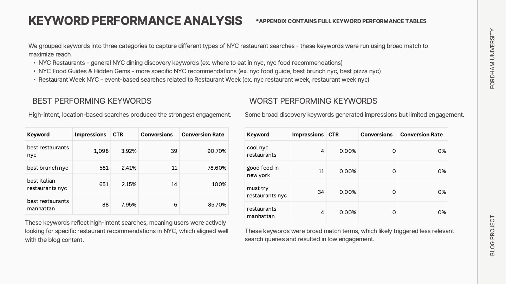

← Back to Projects
Campaign Analytics
Google Ads
Google Analytics
 Google Ads
Google Ads
 Google Analytics
Google Analytics
NYC Bite Week Marketing Analytics
Content marketing and paid search experiment analyzing how Google Ads campaigns drive traffic and engagement for a NYC dining blog.
Overview
Content marketing and paid search experiment analyzing how Google Ads campaigns drive traffic and engagement for a NYC dining blog.
Key Insights
- 46,506 impressions and 651 clicks generated through Google Ads search campaigns
- High-intent restaurant keywords significantly outperformed broad discovery searches
- Paid search drove the majority of traffic, with most visitors discovering the blog for the first time
Tools Used
Google Ads
Google Analytics
Marketing Analytics
Business Takeaway
The campaign showed that stronger search intent produced better engagement and that paid search played the primary role in discovery and traffic generation.
Project Screenshots


